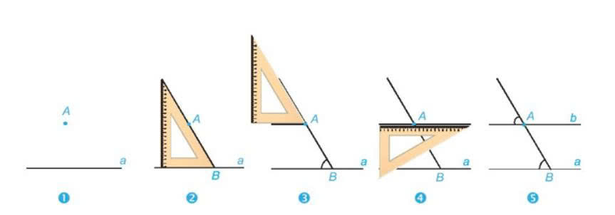

• Cho đường thẳng c cắt hai đường thẳng a và b lần lượt tại A và B.
• Khi đó ta có:
+ Các cặp góc so le trong là: A3 và B1; A4 và B2.
+ Các cặp góc đồng vị là: A1 và B1; A2 và B2; A3 và B3; A4 và B4.
+ Các cặp góc trong cùng phía là: A4 và B1; A3 và B2.
• Nếu đường thẳng c cắt hai đường thẳng phân biệt a và b, đồng thời có một cặp góc so le trong bằng nhau thì:
• Nếu đường thẳng c cắt hai đường thẳng phân biệt a và b và có:
Thì a song song với b.
Kí hiệu:
a // b
• Hai đường thẳng phân biệt cùng vuông góc với một đường thẳng thứ ba thì chúng song song với nhau.
Muốn vẽ đường thẳng đi qua một điểm và song song với một đường thẳng cho trước bằng góc 60° của êke, ta thực hiện theo hướng dẫn trong hình sau:
